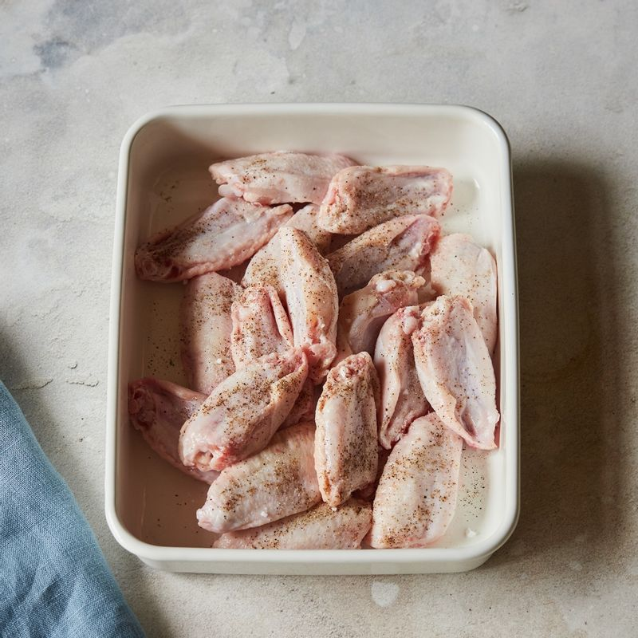
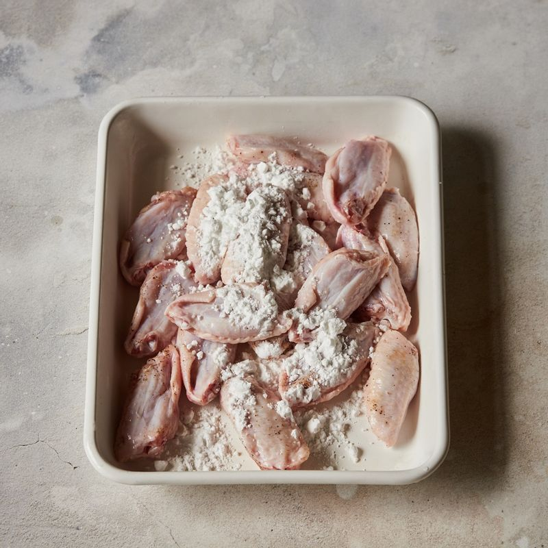
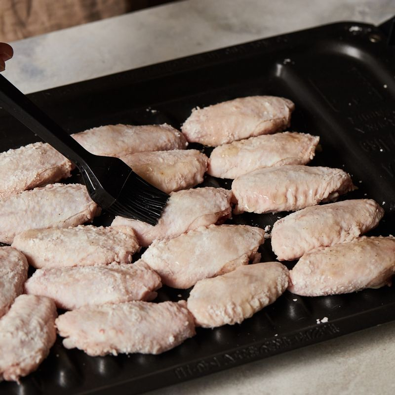
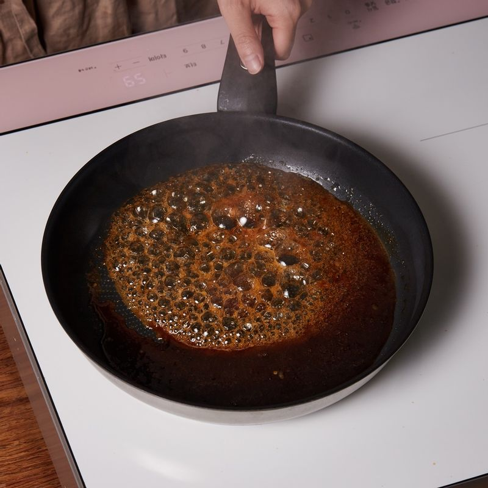
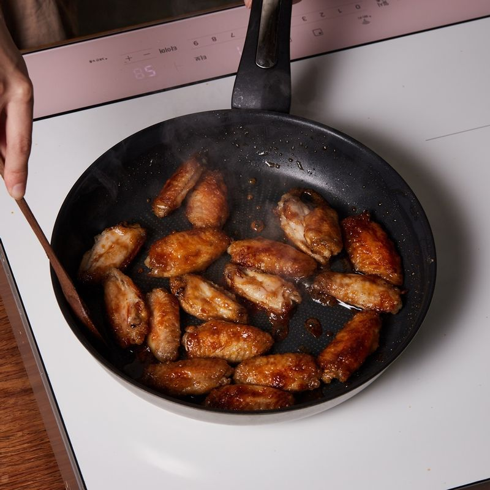
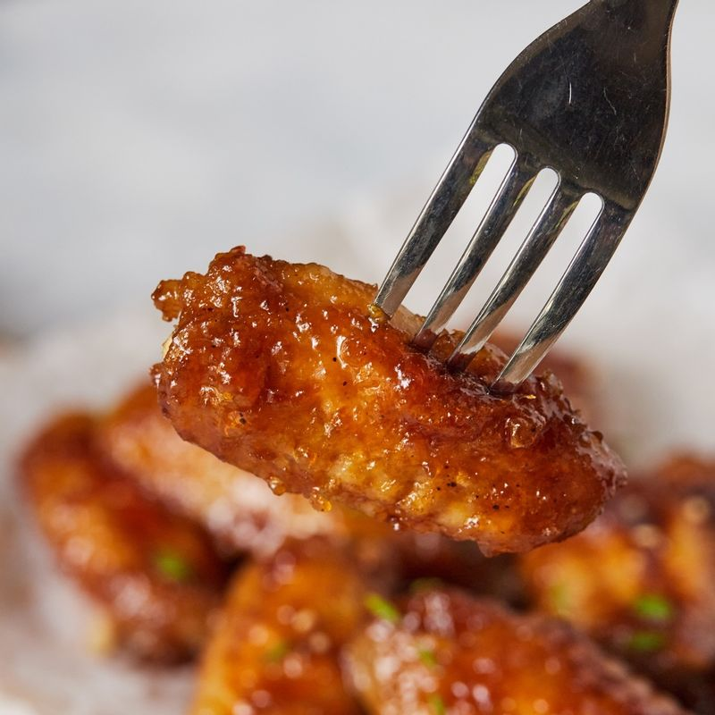

-

닭날개는 밑간 재료에 재워주세요.
-

재워둔 닭날개에 전분을 묻혀 털어내주세요.
-

구이 전용 팬에 닭 날개를 올린 후 식용유를 바르고 4단에 넣고 광파오븐 수동 요리 <구이> 기능에서 25분으로 설정 후 시작해 주세요.
-

팬에 소스 재료를 넣고 저어가며 7단에서 1분간 끓여주세요.
-

구운 닭날개를 넣고 7단에서 1분간 버무려주세요.
-

완성된 허니 갈릭 치킨윙을 접시에 담아 쪽파와 레몬을 곁들여 맛있게 즐겨주세요.